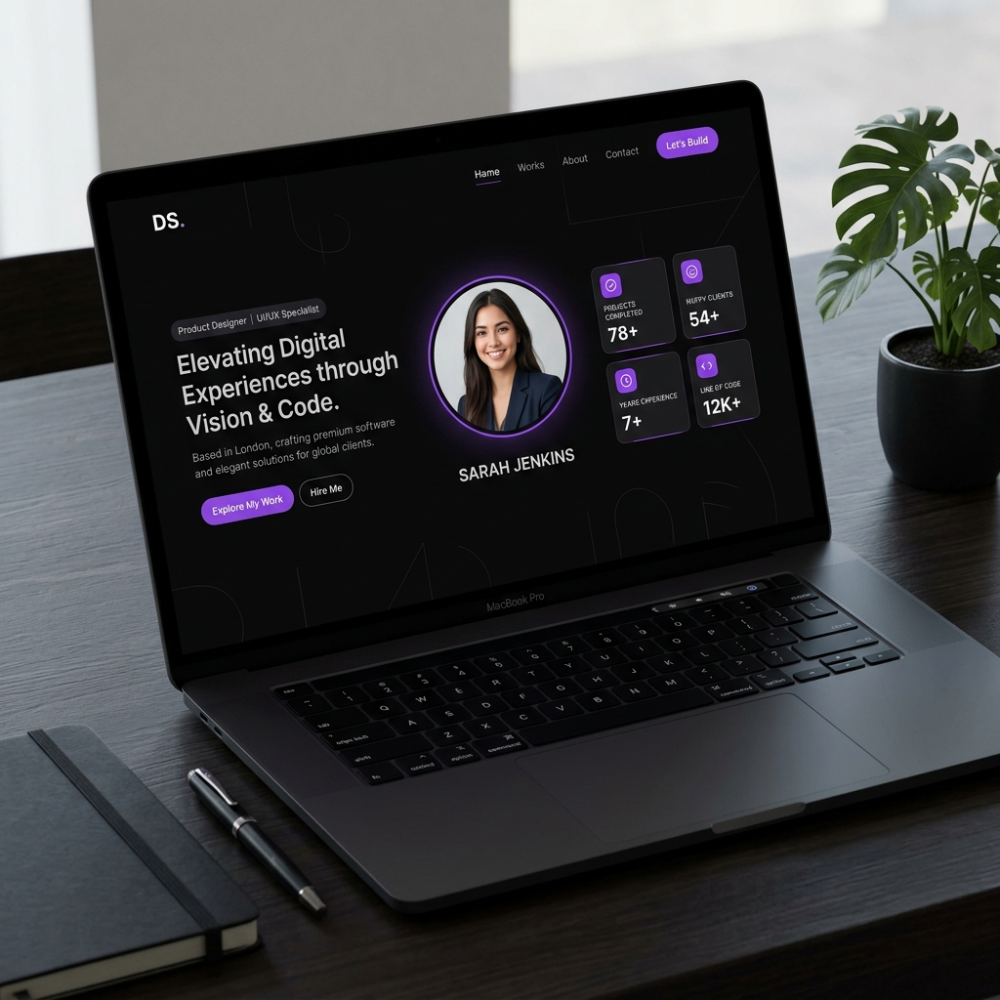

SIMRS Hospital ERP
Lead Developer & ERP ModelerMasalah & Kebutuhan: Rumah sakit membutuhkan digitalisasi alur pelayanan medis yang saling terhubung mulai dari pendaftaran, poli rawat jalan, rekam medis elektronik (EMR), hingga validasi legal tindakan dokter tanpa kertas.
Peran & Kontribusi: Merancang skema modul kustom Odoo, mengintegrasikan alur antrean poli dengan status rekam pasien, membangun fitur tanda tangan digital dokter (e-signature), serta mencetak resume medis terstandarisasi.
Pendekatan & Tantangan Teknis
Mencegah konflik konkurensi data rekam medis dengan atomic transactions pada PostgreSQL, inheritance view Odoo XML yang modular agar tidak mengganggu modul accounting/invoicing bawaan, serta QWeb PDF reporting untuk dokumen rekam medis resmi.
Odoo ERP
Python
PostgreSQL
XML Views
QWeb Engine
